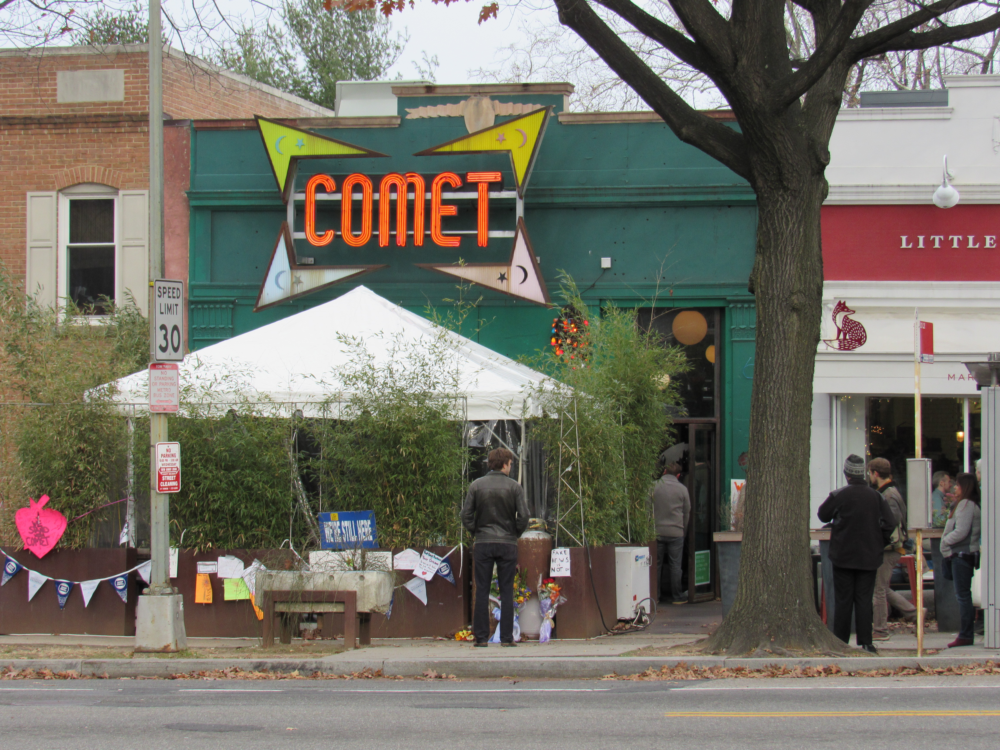
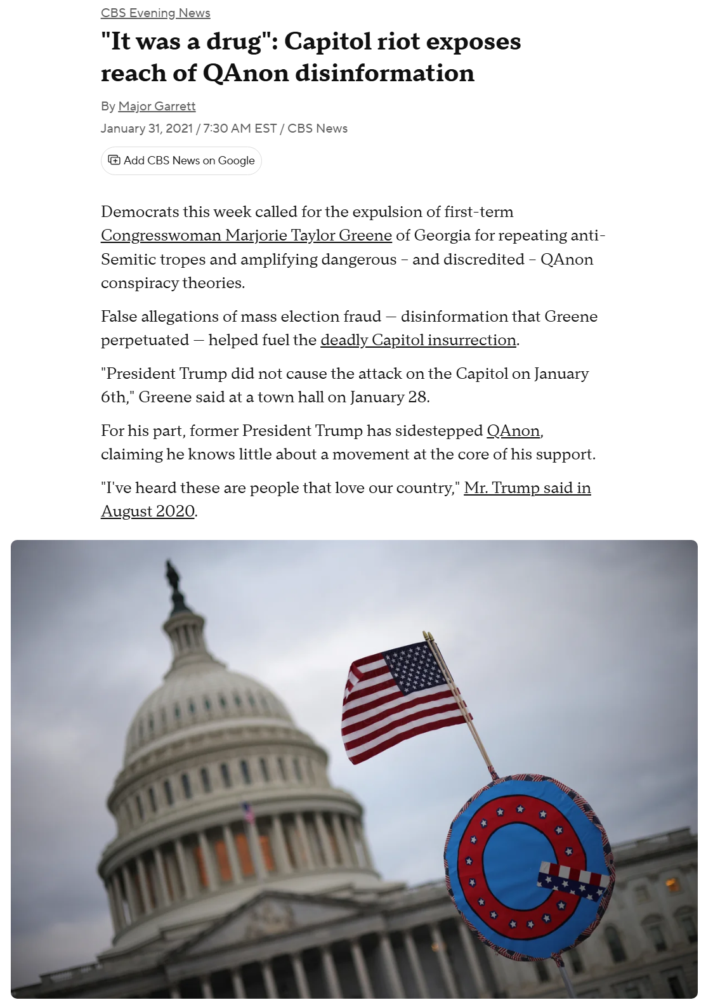

QAnon Filter Net
Welcome to Your Militia Journey
You started out as someone searching for truth, questioning the news and seeking answers beyond the surface. You wanted to understand the world and expose corruption. But before you knew it, you got trapped. Now you are in the QAnon community. QAnon is an online network built around conspiracy theories, claiming that a hidden group controls governments and global institutions. One of its central beliefs is Pizzagate, the false claim that a Washington, D.C. pizzeria was the center of a child trafficking ring run by politicians. Within this world, cryptic messages and secret knowledge dominate, creating an endless cycle of suspicion and fear. Your curiosity turned into obsession, your skepticism became paranoia, and the online echo chamber pulled you deeper, keeping you isolated from reality and feeding the narratives that keep you trapped.

Real Life Consequences
The QAnon community is not just online speculation, it has had deadly and violent consequences in the real world. Followers have carried their beliefs into public spaces, harassing journalists, politicians, and activists, spreading fear and intimidation. The most dramatic example occurred on January 6, 2021, when QAnon supporters participated in the attack on the U.S. Capitol, attempting to overturn a democratic election. Within this world, the line between conspiracy and action blurs, normalizing extremism, eroding trust in institutions, and putting lives at risk. Your curiosity and search for hidden truths have been exploited, drawing you into a movement that encourages harassment, illegal activity, and real-world violence.
